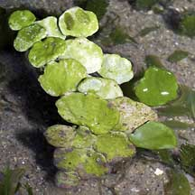
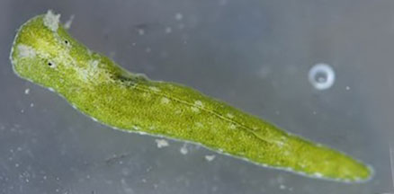
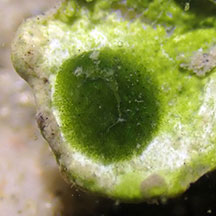
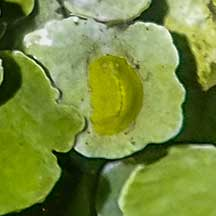
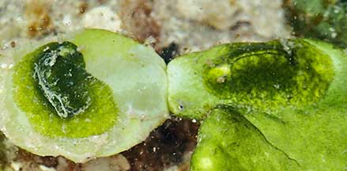
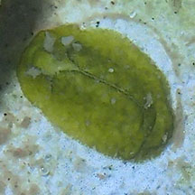
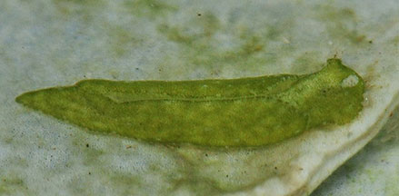
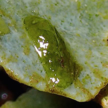
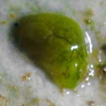

Halimeda
slug
Elysia pusilla
Family Plakobranchidae
updated
Jun 2020
Where
seen? This tiny slug is sometimes seen on Big
coin green seaweeds (Halimeda sp.). Several slugs may be
seen on one clump of seaweed. It was previously known as Elysiella
pusilla.
Features: A tiny
well camouflaged slug (0.5-1.5cm long). Oval, flat almost featureless
body, with tiny tentacles at the head. The body is transparent or
exactly the same colour as the seaweed that it is found on. The seaweed
concentrates defensive chemicals in its youngest parts. Studies show
that the slugs not only prefer to feed on these parts of the seaweed,
but also use the chemicals to protect themselves and their eggs. |

Labrador, Mar 05 |
|

Labrador, Jun 05 |
| Halimeda
slugs on Singapore shores |
| Other sightings on Singapore shores |

Terumbu Buran, Nov 11
Photo shared by James Koh on flickr. |
|

Sentosa Tg Rimau, Oct 25
Shared by Loh Kok Sheng on facebook. |

Sentosa Serapong, Jul 21
Photo shared by Vincent Choo on facebook. |
|
|

Cyrene, Dec 21
Photo shared by Toh Chay Hoon on facebook. |

Terumbu Semakau, May 17
Photo shared by Toh Chay Hoon on facebook. |

Terumbu Semakau, May 17
Photo shared by Toh Chay Hoon on facebook. |

Terumbu Raya, Jun 18
Photo shared by Toh Chay Hoon on facebook. |

Pulau Semakau (East), Aug 21
Photo shared by Vincent Choo on facebook. |
|
Links
References
- K. R. Jensen. Sacoglossa (Mollusca: Gastropoda: Heterobranchia) from northern coasts of Singapore. 10 July 2015. The Comprehensive Marine Biodiversity Survey: Johor Straits International Workshop (2012) The Raffles Bulletin of Zoology 2015 Supplement No. 31, Pp. 226-249.
- Kathe
R. Jensen. 30 Dec 2009. Sacoglossa
(Mollusca: Gastropoda: Opisthobranchia) from Singapore. The Raffles Bulletin of Zoology, Supplement 22: 207-223.
- Tan Siong
Kiat and Henrietta P. M. Woo, 2010 Preliminary
Checklist of The Molluscs of Singapore (pdf), Raffles
Museum of Biodiversity Research, National University of Singapore.
- Debelius,
Helmut, 2001. Nudibranchs
and Sea Snails: Indo-Pacific Field Guide IKAN-Unterwasserachiv, Frankfurt. 321 pp.
- Wells, Fred
E. and Clayton W. Bryce. 2000. Slugs
of Western Australia: A guide to the species from the Indian to
West Pacific Oceans.
Western Australian Museum. 184 pp.
- Coleman,
Neville. 2001. 1001
Nudibranchs: Catalogue of Indo-Pacific Sea Slugs. Neville
Coleman’s Underwater Geographic Pty Ltd, Australia.144pp.
- Humann, Paul
and Ned Deloach. 2010. Reef
Creature Identification: Tropical Pacific New World Publications.
497pp.
|
|
|